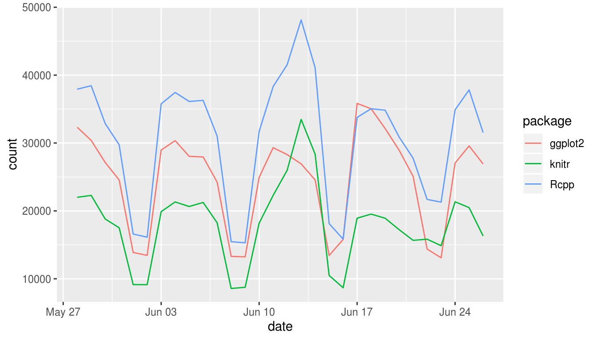
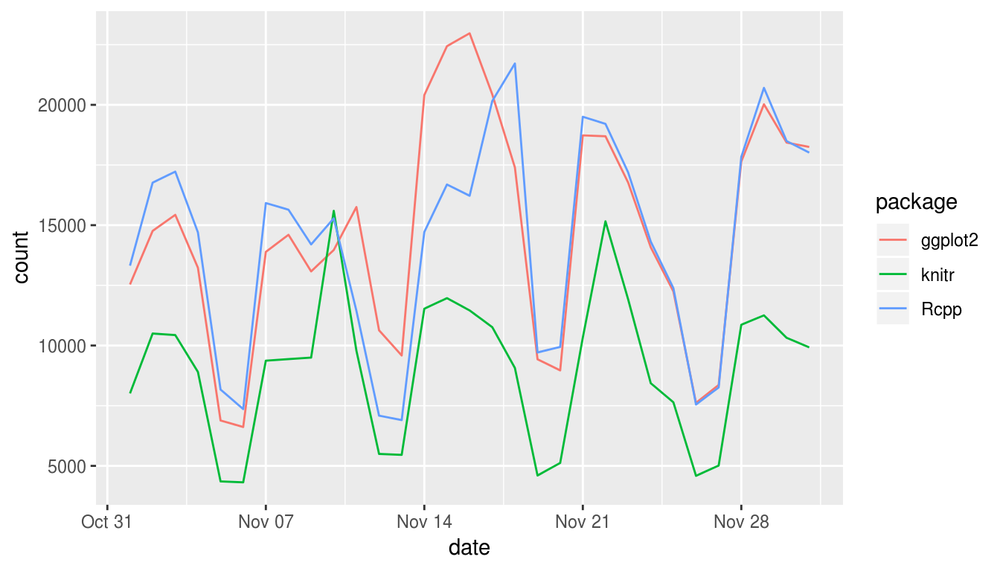

Chapter 3 An analysis of R package download trends
This chapter explores R package download trends using the cranlogs package, and it shows how drake’s custom triggers can help with workflows with remote data sources.
3.1 Get the code.
Write the code files to your workspace.
The new packages folder now includes a file structure of a serious drake project, plus an interactive-tutorial.R to narrate the example. The code is also online here.
3.2 Overview
This small data analysis project explores some trends in R package downloads over time. The datasets are downloaded using the cranlogs package.
library(cranlogs)
cran_downloads(packages = "dplyr", when = "last-week")
## date count package
## 1 2018-10-14 11481 dplyr
## 2 2018-10-15 23581 dplyr
## 3 2018-10-16 32127 dplyr
## 4 2018-10-17 34008 dplyr
## 5 2018-10-18 29982 dplyr
## 6 2018-10-19 24872 dplyr
## 7 2018-10-20 13240 dplyrAbove, each count is the number of times dplyr was downloaded from the RStudio CRAN mirror on the given day. To stay up to date with the latest download statistics, we need to refresh the data frequently. With drake, we can bring all our work up to date without restarting everything from scratch.
3.3 Analysis
First, we load the required packages. drake detects the packages you install and load.
We will want custom functions to summarize the CRAN logs we download.
make_my_table <- function(downloads){
group_by(downloads, package) %>%
summarize(mean_downloads = mean(count))
}
make_my_plot <- function(downloads){
ggplot(downloads) +
geom_line(aes(x = date, y = count, group = package, color = package))
}We want to explore the daily downloads from these packages.
We will use the cranlogs package to get daily logs of package downloads from RStudio’s CRAN mirror. In our drake_plan(), we declare targets older and recent to contain snapshots of the logs.
data_plan <- drake_plan(
older = cran_downloads(
packages = package_list,
from = "2016-11-01",
to = "2016-12-01"
),
recent = target(
command = cran_downloads(
packages = package_list,
when = "last-month"
),
trigger = trigger(change = latest_log_date())
)
)
data_plan
## # A tibble: 2 x 3
## target command trigger
## <chr> <chr> <chr>
## 1 older "cran_downloads(packages = package_list, f… <NA>
## 2 recent "cran_downloads(packages = package_list, w… trigger(change = lat…Notice the custom trigger for the target recent. Here, we are telling drake to rebuild recent whenever a new day’s log is uploaded to http://cran-logs.rstudio.com. In other words, drake keeps track of the return value of latest_log_date() and recomputes recent (during make()) if that value changed since the last make(). Here, latest_log_date() is one of our custom imported functions. We use it to scrape http://cran-logs.rstudio.com using the rvest package.
latest_log_date <- function(){
read_html("http://cran-logs.rstudio.com/") %>%
html_nodes("li:last-of-type") %>%
html_nodes("a:last-of-type") %>%
html_text() %>%
max
}Once we get our download statistics, we will want to summarize them with tables and plots.
output_types <- drake_plan(
averages = make_my_table(dataset__),
plot = make_my_plot(dataset__)
)
output_plan <- evaluate_plan(
plan = output_types,
wildcard = "dataset__",
values = data_plan$target
)
output_plan
## # A tibble: 4 x 2
## target command
## <chr> <chr>
## 1 averages_older make_my_table(older)
## 2 averages_recent make_my_table(recent)
## 3 plot_older make_my_plot(older)
## 4 plot_recent make_my_plot(recent)We plan to weave the results together in a dynamic knitr report.
report_plan <- drake_plan(
report = knit(knitr_in("report.Rmd"), file_out("report.md"), quiet = TRUE)
)
report_plan
## # A tibble: 1 x 2
## target command
## <chr> <chr>
## 1 report "knit(knitr_in(\"report.Rmd\"), file_out(\"report.md\"), quiet =…Because of the mention of knitr_in() above, make() will look dependencies inside report.Rmd (targets mentioned with loadd() or readd() in active code chunks). That way, whenever a dependency changes, drake will rebuild report.md when you call make(). For that to happen, we need report.Rmd to exist before the call to make(). For this example, you can find report.Rmd here.
Now, we complete the workflow plan data frame by concatenating the results together. drake uses implicit dependency relationships to resolve execution order, so row order in the plan does not matter.
whole_plan <- bind_plans(
data_plan,
output_plan,
report_plan
)
whole_plan
## # A tibble: 7 x 3
## target command trigger
## <chr> <chr> <chr>
## 1 older "cran_downloads(packages = package_lis… <NA>
## 2 recent "cran_downloads(packages = package_lis… trigger(change = la…
## 3 averages_o… make_my_table(older) <NA>
## 4 averages_r… make_my_table(recent) <NA>
## 5 plot_older make_my_plot(older) <NA>
## 6 plot_recent make_my_plot(recent) <NA>
## 7 report "knit(knitr_in(\"report.Rmd\"), file_o… <NA>Now, we run the project to download the data and analyze it.
The results will be summarized in the knitted report, report.md,
but you can also read the results directly from the cache.
make(whole_plan)
## target older
## target recent
## target averages_older
## target plot_older
## target averages_recent
## target plot_recent
## target report
readd(averages_recent)
## # A tibble: 3 x 2
## package mean_downloads
## <chr> <dbl>
## 1 ggplot2 24223.
## 2 knitr 13844.
## 3 Rcpp 30292.
readd(averages_older)
## # A tibble: 3 x 2
## package mean_downloads
## <chr> <dbl>
## 1 ggplot2 14641.
## 2 knitr 9069.
## 3 Rcpp 14408.
readd(plot_recent)

If we run make() again right away, we see that everything is up to date. But if we wait until a new day’s log is uploaded, make() will update recent and everything that depends on it.
To visualize the build behavior, you can plot the dependency network.
3.4 Other ways to trigger downloads
Sometimes, our remote data sources get revised, and web scraping may not be the best way to detect changes. We may want to look at our remote dataset’s modification time or HTTP ETag. To see how this works, consider the CRAN log file from February 9, 2018.
We can track the modification date using the httr package.
library(httr) # For querying websites.
HEAD(url)$headers[["last-modified"]]
## [1] "Mon, 12 Feb 2018 16:34:48 GMT"In our workflow plan, we can track this timestamp and trigger a download whenever it changes.
plan <- drake_plan(
logs = target(
get_logs(url),
trigger(change = HEAD(url)$headers[["last-modified"]])
)
)
plan
## # A tibble: 1 x 3
## target command trigger
## <chr> <chr> <chr>
## 1 logs get_logs(url) "trigger(change = HEAD(url)$headers[[\"last-modifi…where
library(R.utils) # For unzipping the files we download.
library(curl) # For downloading data.
get_logs <- function(url){
curl_download(url, "logs.csv.gz") # Get a big file.
gunzip("logs.csv.gz", overwrite = TRUE) # Unzip it.
out <- read.csv("logs.csv", nrows = 4) # Extract the data you need.
unlink(c("logs.csv.gz", "logs.csv")) # Remove the big files
out # Value of the target.
}When we are ready, we run the workflow.
make(plan)
## target logs
readd(logs)
## date time size version os country ip_id
## 1 2018-02-09 13:01:13 82375220 3.4.3 win RO 1
## 2 2018-02-09 13:02:06 74286541 3.3.3 win US 2
## 3 2018-02-09 13:02:10 82375216 3.4.3 win US 3
## 4 2018-02-09 13:03:30 82375220 3.4.3 win IS 4If the log file at the url ever changes, the timestamp will update remotely, and make() will download the file again.